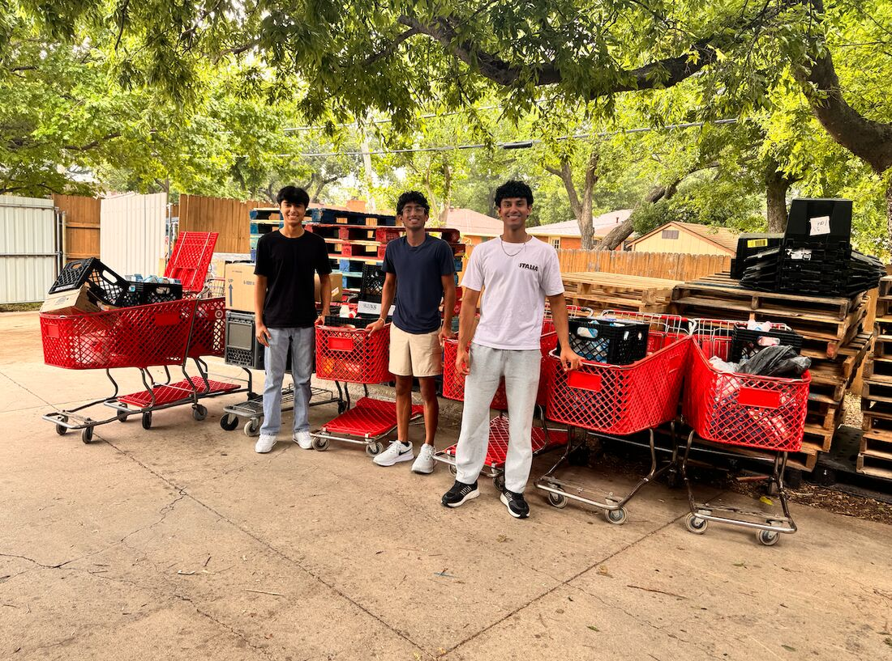

FOX 4 News Dallas-Fort Worth · March 2026
Here’s To You: Southlake Student Stops Food Going to Waste
FOX 4’s “Here’s To You” segment spotlighted Plates to Purpose and how a Southlake Carroll student is putting a stop to fresh, safe-to-eat food ending up in landfills — redirecting it to neighbors in need across DFW instead.
Watch the clip on FOX 4 →